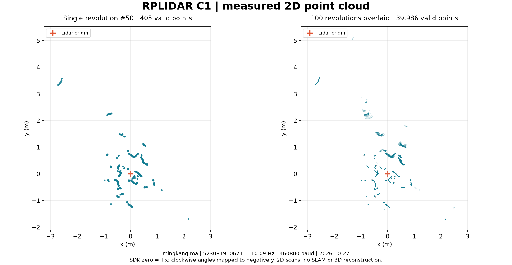

C1 激光点云实验：无显示屏复现
mingkang ma · 523031910621 · 2026-10-27
新增：接屏幕并实现 Hello World → 10 秒扫描 → 点云图开机自启，请打开 boot-demo/实验指导.html。以下保留 WEEK8 原始无屏幕实验；若已安装自动采集服务，运行官方串口示例前先在板卡执行 c1ctl stop。
本实验对应 WEEK8 第 22、27、30–36 页：识别 USB 串口，交叉编译官方 RPLIDAR SDK，在 STM32MP257F-DK 上运行采集示例，再保存和查看二维点云。板卡无需显示屏。前提是前面的刷机、网络和 OpenSTLinux SDK 实验已完成。
本次已得到什么
| 检查项 | 实测结果 |
|---|
| 板卡 / 内核 | STM32MP257F-DK / 6.6.78-gkc-sdk，AArch64 |
| 雷达 | RPLIDAR C1M1，固件 1.02，硬件版本 18 |
| USB 驱动 / 串口 | CP210x 已加载，/dev/ttyUSB0，460800 8N1 |
| 设备健康 | OK，error_code=0 |
| 官方示例 | simple_grabber 柱状图、ultra_simple 连续角度/距离输出均成功 |
| 文件采集 | 100 圈，50,395 个采样，39,986 个有效点（79.35%） |
| 实测扫描频率 / 距离 | 10.09 圈/秒；本次有效测距 0.163–5.278 m |
双击打开 点云回放.html，可播放、拖动选圈、缩放视野、叠加各圈和保存图片。它回放的就是板卡采集数据，不需要联网或安装软件。图片在 images 文件夹；原始 CSV、PCD 和统计结果在 data 文件夹。
1 连接和检查
C1 → 配套 USB 转串口适配器 → 板卡 USB HOST 口；板卡 CN15 → Mac/Windows。保留板卡供电，雷达水平放稳，测距窗口无遮挡。显示屏可以不接。
在 Mac 终端或 Windows PowerShell 执行：
核对板卡指纹后接受首次连接；本组现有镜像 root 密码为空。进入板卡后执行：
uname -m
lsusb
ls -l /dev/ttyUSB* /dev/serial/by-id/
dmesg | grep -E 'cp210|ttyUSB'
应看到 aarch64、Silicon Labs 10c4:ea60，以及 cp210x 绑定 ttyUSB0。本次内核已有 CP210x 驱动，不需要安装 Windows 驱动到板卡，也不需要重编内核。若串口编号变化，后面命令使用实际编号。
2 使用官方 SDK 交叉编译
在 Ubuntu 中进入解压后的 lidar-lab 文件夹。前次 Hello World 离线包安装的 OpenSTLinux SDK 可以直接复用：
默认读取 ~/hello-lab-sdk/environment-setup-cortexa35-ostl-linux。SDK 在其他位置时：
SDK_ENV=/your/sdk/environment-setup-cortexa35-ostl-linux bash scripts/build.sh
本机 Mac 使用已有 ARM64 Ubuntu 虚拟机及 ARM 主机版官方 SDK；Windows 上的 x86_64 Ubuntu 使用 x86 主机版 SDK。两者目标都是板卡的 AArch64 Linux。脚本在 Linux 临时目录构建，支持源码放在共享目录。
脚本实际调用课件中的 cross_compile.sh / make，并保留 OpenSTLinux 的 sysroot 和 Cortex-A35 参数。看到 BUILD PASSED 和 Machine: AArch64 即完成。结果是 output 下的 ultra_simple、simple_grabber、c1_capture；完整输出在 output/build.log。
包内已附本次验证过的这三个程序，若只演示运行可以直接使用；要展示自己交叉编译的过程，应执行本步。C1 SDK 源码已放在 vendor/rplidar_sdk；无需再次下载。OpenSTLinux 工具链沿用前次安装，本包没有重复打包那份约 1 GB 的安装器。
3 把程序传到板卡
在 宿主电脑 中进入 lidar-lab 文件夹。Windows 和 macOS 都执行：
ssh root@192.168.7.1 "mkdir -p /home/root/c1-lab/bin /home/root/c1-lab/data"
scp -O output/ultra_simple output/simple_grabber output/c1_capture root@192.168.7.1:/home/root/c1-lab/bin/
ssh root@192.168.7.1
如果 Windows 使用 WSL，可在 PowerShell 进入存放此文件夹的 Windows 目录；如果程序在虚拟机内，先通过共享目录复制到宿主。无需把雷达转交给 WSL，雷达始终接在板卡上。
在 板卡 中执行：
cd /home/root/c1-lab
chmod +x bin/*
./bin/simple_grabber --channel --serial /dev/ttyUSB0 460800
应显示序列号、固件和 Health OK，随后出现柱状图。询问是否显示全部数据时输入 y 或 n。再演示连续测距：
./bin/ultra_simple --channel --serial /dev/ttyUSB0 460800
应持续输出 theta（角度，°）、Dist（距离，mm）、Q（质量）。使用 Ctrl+C 结束，让程序正常发送停止扫描命令。不要同时运行两个采集程序占用同一串口。
4 保存自己的 100 圈数据
仍在 板卡 的 /home/root/c1-lab 中执行：
./bin/c1_capture /dev/ttyUSB0 100 data/my-scan.csv
约十余秒后看到 CAPTURE PASSED、统计信息和停止扫描提示。每次使用一个新文件名，程序拒绝覆盖已有 CSV。若希望保存终端输出：
./bin/c1_capture /dev/ttyUSB0 100 data/my-scan-2.csv > data/my-scan-2.log 2>&1
echo $?
cat data/my-scan-2.log
成功退出码是 0。100 表示采集 100 圈，可改为其他正整数。Ctrl+C 会正常停止并保留已采集部分，退出码为 130；这不算完整的 100 圈实验。
在 宿主电脑 的 lidar-lab 文件夹中取回：
scp -O root@192.168.7.1:/home/root/c1-lab/data/my-scan.csv data/
5 在电脑查看点云
查看本次已完成实验：双击 点云回放.html 即可。若要把自己新采集的文件生成回放，在 Ubuntu 进入 lidar-lab 后执行：
python3 scripts/analyze.py data/my-scan.csv
脚本只用 Python 标准库就能检查数据、生成 HTML 回放和单圈 PCD；结果会更新本地回放页面。PNG/GIF 导出是可选功能，只有安装了 matplotlib 时才生成。无需为查看现有结果安装依赖。
CSV 每行保留圈号、采集相对时间、角度、距离、质量、有效标志、坐标，以及 SDK 原始定点数。距离或质量为 0 的点保留在 CSV 中，但不画在原点。坐标采用 x=r*cos(theta)、y=-r*sin(theta)；SDK 顺时针角度零点定义为 +x，没有额外标定板卡或房间朝向。PCD 的 z 坐标为 0。
C1 是二维扫描雷达。 本实验得到扫描平面的距离点集；多圈叠加可观察重复性和运动，不能直接称作三维点云或 SLAM 建图。本次采样期间出现少量环境变化，叠加图如实保留。
课件示例中需要修正的地方
| 课件位置 | 本板实际用法 |
|---|
| 第 31–32 页的 arm-linux-gnueabihf / gcc-arm-none-eabi 示例 | STM32MP257F-DK 为 Cortex-A35 + M33；Linux 用户程序用 aarch64-ostl-linux 官方工具链。arm-none-eabi 是裸机工具链，不能生成本实验的 Linux 用户程序。 |
| 第 31 页“SDK 驱动装载到内核” | USB 转串口内核驱动是 cp210x；RPLIDAR SDK 是用户空间静态库，链接到应用，不是需要 insmod 的 .ko。 |
| 第 34 页的 115200 | C1 使用 460800，命令中明确指定。 |
| 第 27 页 simple_grabber 的采集圈数描述 | 本次固定版本的源码实际抓取一圈并输出柱状图；100 圈记录由 c1_capture 完成。 |
simple_grabber 的原始柱状图是距离示例，并非二维平面图；当前上游版本的角度分箱较粗且实现有局限，二维结果以 CSV 坐标图为准。SDK 查询模式所返回的 16 m / 40 m 是模式字段，不等于 C1 的硬件量程；C1 官方白色目标标称量程为 0.05–12 m，本次并未做量程极限测试。
验收与排错
保存：源码和 SDK 固定版本、output/build.log、健康状态输出、连续测距日志、自己的 CSV、点云图片或回放。验收时先运行 ultra_simple 展示实时变化，再展示保存的数据与图像。
本次刚开始转动时出现一次读超时，程序随后自动恢复，完成 100 圈并以 0 退出；该情况已保留在原始日志。连续三次读取失败会终止并保留部分数据。持续无数据时依次检查串口编号、460800 波特率、USB 供电与数据线，以及是否有另一个程序占用串口。
没有显示屏时，之前的 hello-lab-screen 可能报告启动失败，这是 Weston 没有显示输出，不影响本次 C1 采集。我们保留了原先 Hello World 自启设置；接回 HDMI 后仍可继续原实验。
本次实际运行环境为 Mac + ARM64 Ubuntu 虚拟机 + 官方 ARM 主机 SDK + STM32MP257F-DK。Windows 的传输命令按相同 SSH/SCP 接口给出，未在实体 Windows 上再次实测。
来源与版本
- WEEK8 课件：PPT/WEEK8-第11讲 嵌入式Linux开发项目实践 - Developer-C1激光雷达SDK应用-期中项目拓展课.pdf，第 22、27、30–36 页。
- 官方 SDK：https://github.com/Slamtec/rplidar_sdk ，版本 2.1.0，固定提交 99478e5fb90de3b4a6db0080acacd373f8b36869；本包保留官方源码和许可。
- 官方 C1 参数：https://www.slamtec.com/en/c1/spec 。
- 实测原始日志：evidence/03-simple-grabber.txt、04-ultra-simple.txt、05-c1-capture.txt。
- 数据校验和统计：data/summary.json、evidence/07-data-validation.txt。
本次真实点云图

左：第 50 号扫描；右：100 圈有效测距叠加。所有点来自板卡 CSV。